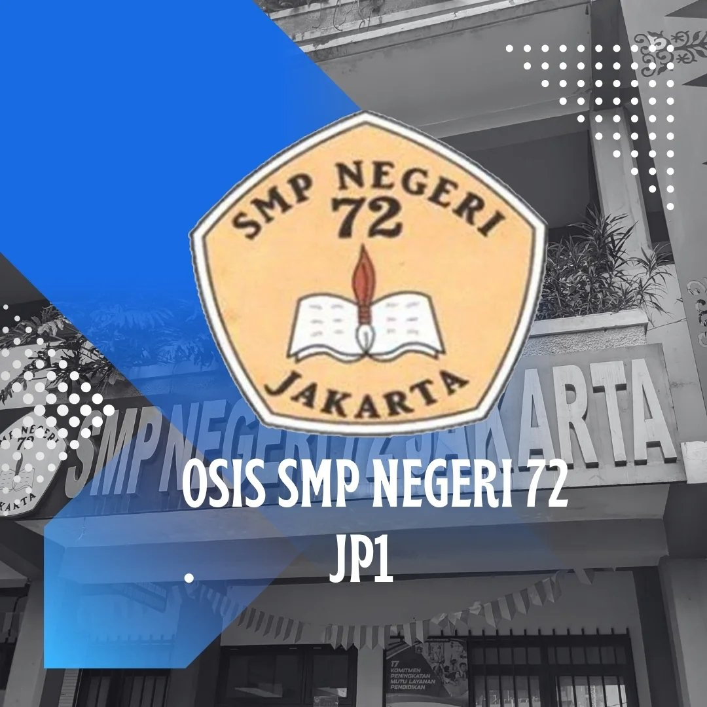
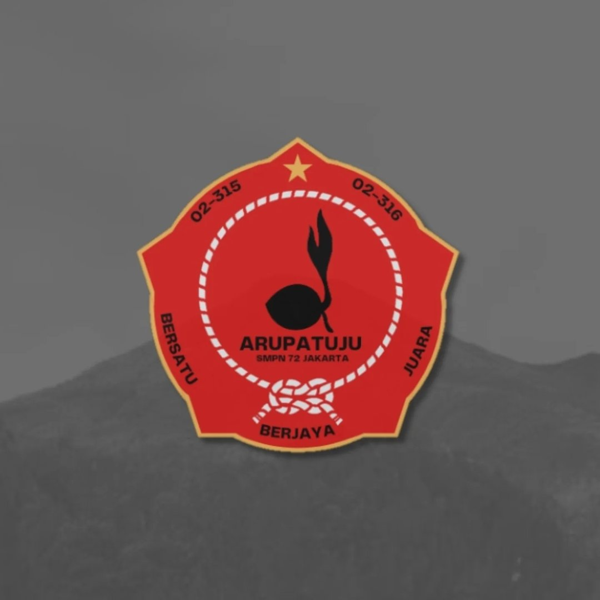
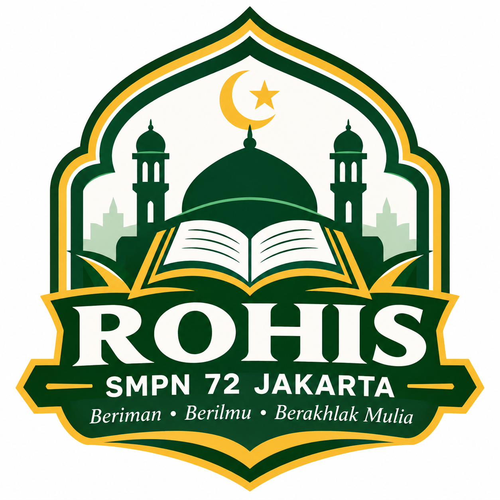
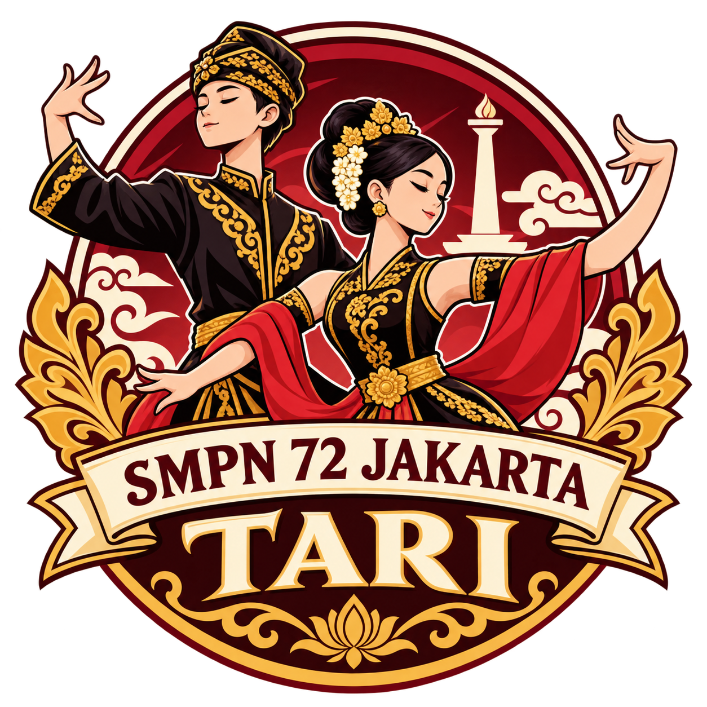

Kesiswaan
Pengembangan Karakter & Bakat Siswa
Membentuk siswa SMPN 72 Jakarta yang aktif, kreatif, dan berkarakter melalui beragam kegiatan ekstrakurikuler dan acara rutin sekolah.
Pengembangan Minat & Bakat
Ekstrakurikuler Pilihan
Setiap siswa dianjurkan mengikuti minimal satu ekstrakurikuler sesuai minat dan bakatnya.
Paskibra

Pramuka
PMR (Palang Merah Remaja)
KIR (Karya Ilmiah Remaja)
Panduan Suara
Pencak Silat

Rohani Islam
English Club

Tari Club
Kehidupan Sekolah
Kegiatan Rutin
Kegiatan rutin menjadi ruang pembiasaan karakter, kepemimpinan, dan kebersamaan seluruh warga sekolah.
Upacara Bendera
Dilaksanakan setiap Senin dan hari besar nasional untuk menumbuhkan nasionalisme dan kedisiplinan.
Peringatan Hari Besar
Peringatan hari besar keagamaan dan nasional melalui kegiatan yang edukatif dan melibatkan siswa.
Class Meeting
Kompetisi antarkelas di akhir semester untuk mempererat kebersamaan dan sportivitas siswa.
MPLS
Masa Pengenalan Lingkungan Sekolah bagi peserta didik baru agar cepat beradaptasi.
Pentas Seni & Gelar Karya
Panggung apresiasi bakat siswa serta pameran hasil projek penguatan profil pelajar Pancasila.
Bakti Sosial
Kegiatan kepedulian sosial siswa sebagai bagian dari pembinaan karakter dan empati.